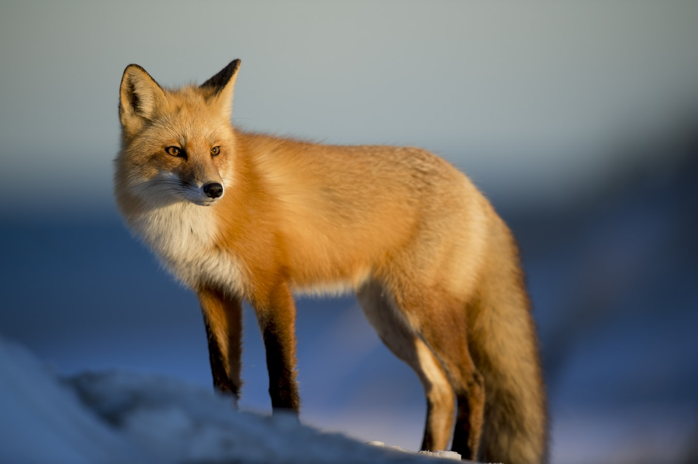

The most important features that differentiates mammals from other types of animals
[1] Bare baby not eggs. Most animals that bare child are mammals. Amphibians, birds, and other types of animals lay eggs. But should be aware that there are exceptions.
There exists mammals that lay eggs, and fishes that bare child. [2] Mostly have furs. There are exceptions as well. Hodgehodgs has thorns not furs, and furs of rhinoceres has been degenerated.[3] Homeotherm Mammals are homeotherm in that their body control their body temperature so that they can be active in cold, but they need consistent energy charge. 
FoxWolf
If you are interested in communicating with other users who are interested in wild animals
Please join us by applying for membership from following links
Website "Wild Animals And Plants" dealts with animals and plants. You can first choose between animals and plants from header. Then you
can choose more detailed categories of animals and plants from main section. If you chose specifically what you want to know, you can look at
it at article section.